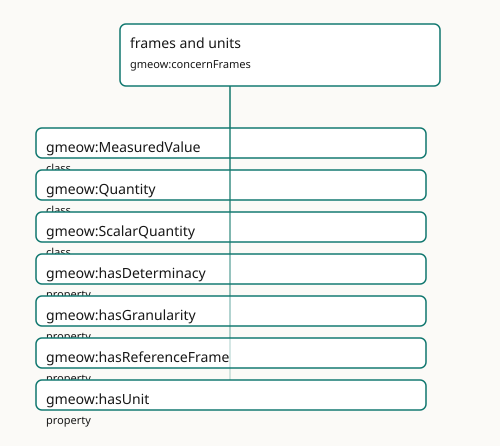

frames and units
Reference frames, units, determinacy, granularity, and frame-relative values.

Participating Slices
- kernel - GMEOW Core Module
- observations - GMEOW Observations Module
- places - GMEOW Locations Module
Terms
| Term | Category | Definition |
|---|---|---|
gmeow:MeasuredValue |
class | An alias for gmeow:Quantity — the measured-value perspective on the same value×unit/frame×determinacy×provenance bundle. Equivalent to gmeow:Quantity and gmeow:ScalarQuantity |
gmeow:Quantity |
class | A universal scalar numeric value bundled with unit/frame, determinacy, and provenance — the synthesis of FRAME-GEN + DET-GEN + OBS. Equivalent to gmeow:ScalarQuantity; the do |
gmeow:ScalarQuantity |
class | A scalar numeric value with a unit, determinacy model, and granularity — the entity-valued wrapper for literal observation results (temperatures, distances, counts, probabilities). |
gmeow:hasDeterminacy |
property | Relates a value, entity, or claim to its ontic determinacy model — the explicit facet recording whether the value is crisp, vague, fuzzy, probabilistic, or disputed. Domain-free (u |
gmeow:hasGranularity |
property | Relates a value, place, period, coordinate or measurement to its own resolution level — the explicit 'no silent precision' facet, queryable independently of any disclosure control. |
gmeow:hasReferenceFrame |
property | Relates an entity or value to the reference frame in which it is expressed. |
gmeow:hasUnit |
property | Relates a quantitative value or measurement to its QUDT unit (by reference, never imported). Domain-free: used by temporal measurements, spatial measurements, and any other quantif |